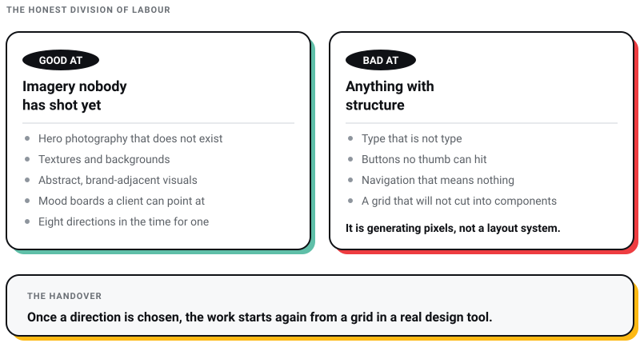
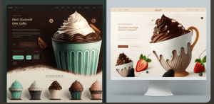

WEB DEVELOPMENT
WEB DEVELOPMENT
AI Website Builders vs Custom Development: Where the Shiny Tools Actually Break
AI website builders are fast, but are they right for your business? Discover where they excel, where they fail, and when custom development is the…

Midjourney does not design websites. It makes pictures of websites, which is a different thing, and confusing the two is the most expensive mistake I see designers make with it.
I run Pixel Street, a web design and branding studio in Salt Lake, Kolkata. We design and build for brands like Coca-Cola, ITC and Marico. Midjourney is genuinely useful in that work, and it is useful for a narrower job than the tutorials suggest: mood, texture, reference and the first honest conversation with a client about direction. Not layout. Never a deliverable.
:: weight syntax are documented as working on model versions up to 6.1. The current default is V8.2. The syntax is not deprecated. It simply does not reach the model you get by default.Two figures follow Midjourney around: that it has “nearly 16 million active users” and that it has produced “almost 974 million images”. I went looking for where they came from.
Midjourney publishes no active-user figure at all. The 16 million traces back to the member count of its Discord server, repeated through statistics-aggregator blogs that cite each other. A Discord server membership is not an active-user count. It counts everybody who ever joined, including people who joined once in 2022 to look. The image total has the same provenance problem and no primary source I could find.
A number that sounds right and traces nowhere is worse than no number. If you want figures about AI adoption in design work that do publish their methodology, I have collected the ones that survive scrutiny in the AI revolution in the design sector.
Here is the honest division of labour, and it has not changed much even as the model has.
It is good at generating the imagery a page needs and nobody has shot yet: hero photography that does not exist, textures, backgrounds, abstract brand-adjacent visuals, and mood boards that let a client point at something instead of describing it. It is very good at producing eight directions in the time it used to take to produce one.
It is bad at anything with structure. Ask it for a homepage UI and you get a picture that looks like a homepage from three metres away and dissolves on inspection: type that is not type, buttons at sizes no thumb can hit, navigation that means nothing, a grid that does not survive being cut into components. That is not a prompting failure you can fix with better syntax. The model is generating pixels, not a layout system.

The examples below still ask it for UI, because they are worth keeping as evidence of exactly that. Read them as direction-finding, not as design. The moment a direction is chosen, the work moves into a real design tool and starts again from a grid.
Most Midjourney guides still frame Discord as the way in. Midjourney itself now runs a Web vs Discord comparison page and is even-handed about it: “You can choose the one that fits your style, or enjoy using both!” What that page then describes is not even-handed at all.
Two differences matter for design work. The Editor is web-only, and it lets you crop, pan and adjust the aspect ratio at the same time, with the Vary Region inpainting tool built into it. On Discord each of those is a separate step. And working from reference images is a button on the web, against hosting the image on Discord, copying its URL and pasting it into a prompt.
If you are following an older tutorial that begins by telling you to join a server, it was written for a workflow that is no longer the main one.
Four techniques survive contact with Midjourney’s current parameter documentation. Get the formatting right before anything else, because a prompt copied out of a blog post often arrives with an en dash where Midjourney requires two hyphens. The docs are specific: parameters go at the end, there is a space before the dashes and no punctuation inside them.
An e-commerce page, a portfolio and a service site have different jobs, and the prompt should carry the job rather than the adjectives. “Beautiful” and “modern” are the two least useful words you can give a model, because every training image was described that way by somebody.
Give it the audience and the commercial intent instead. For a shoe store aimed at a young audience:
an e-commerce UI design for shoes, bold colour, young audience --ar 16:9

Saying what you do not want is more reliable than piling on what you do. The parameter is --no and it takes a comma-separated list of things to push out of the image.
an e-commerce homepage UI design for shoes --ar 16:9 --no laptop, mobile
Removing device mockups is the specific case worth knowing. Ask a model for a website and it will very often hand you a photograph of a laptop on a desk with a website on it, because that is what the training data called a website. --no is how you get the screen without the furniture.

This is the tip that saves the most rework, and it is worth being blunt about why. If you generate a square and then crop it into a wide hero band, you have thrown away the composition the model made. Generate at the shape the page actually needs and the subject sits where the layout wants it.
--ar takes the ratio directly. A wide hero is --ar 16:9. A mobile banner or a full-bleed phone screen is --ar 9:16. A card image is often --ar 4:3 or square.
an e-commerce homepage UI design for shoes --ar 9:16 --no laptop, mobile

Generate one set per ratio you need. Do not generate once and crop three ways.
Long prompts are not detailed prompts. “I want to create a hyper-realistic website for an e-commerce store for clothing and fashion that caters to younger customers and should be colourful” carries about five load-bearing words. The rest is dilution.
e-commerce clothing store, young audience, colourful --ar 16:9
This is the tip I would keep if I could keep only one. Every unnecessary word is a vote for something you did not mean.
Almost every Midjourney tutorial teaches multi-prompts and weights: separating concepts with a double colon so cup:: cake reads as two ideas, and attaching a number to weight one over the other, as in blue::5.
Midjourney’s Multi-Prompts and Weights documentation is explicit about the limit: “Multi-prompts work with Midjourney versions 1, 2, 3, 4, Niji 4, 5, Niji 5, 6, Niji 6, and 6.1.” That list stops at 6.1. The current default is V8.2.
Be precise about what that means, because the internet is not. The Multi-Prompts and Weights page is still live documentation and :: is not on any deprecated list. It is prompt syntax rather than a parameter, and the model most people are running does not implement it. Not broken, not retired, just out of reach unless you drop back to --v 6.1 or older. If you do, the image below is what it produced.

There is a second error that travels with this syntax wherever it is taught: that “the weight ranges from 0-100”. That was never true of prompt weights. Midjourney’s own documentation says an unspecified weight defaults to 1, and that negative weights are allowed as long as every weight in the prompt still adds up to a positive number. It also states that “using the no parameter is the same as using a -0.5 weight”, which is genuinely useful and almost never mentioned.
The 0 to 100 range belongs to a different parameter. Chaos runs 0 to 100. Stylize runs 0 to 1000 with a default of 100, and so does the style weight that goes with a style reference.

Losing multi-prompts sounds like a loss until you see what arrived instead, because the replacement solves the problem a website actually has. A site is not one image. It is a hero, three section backgrounds, six card images and an About page portrait, and they all have to look like they came from the same brand.
Multi-prompt weights were never going to do that. Three parameters in the current list do.
--sref. Point at an image, or at a style code, and Midjourney matches its look across everything you generate. --sw controls how strongly. This is the closest thing Midjourney has to a visual system, and it is the parameter I would learn first for site work.--sref code, and every asset on the site can inherit it. This replaces the old tip about browsing the community for inspiration with something you can actually reuse.--profile. Train a profile on images you have rated or collected and it biases everything you generate towards that taste. For a studio with a house look, or a client with a locked visual identity, this is the leverage.--oref. For carrying a specific person or object across images. It replaced Character Reference in V7.The Explore page is usually presented as an inspiration feed: browse the community, open an image, read the prompt that made it. That undersells it badly. Treat it as a style-code library instead, because a --sref code is reusable across a whole site and a borrowed prompt is not.
Two sentences from Midjourney, and between them they decide whether you can use this on a real project. The terms of service: “By default, Your Content is publicly viewable and remixable.” The Stealth Mode documentation: “Stealth mode is available only to Pro and Mega Plan members.”
Think about what that means in practice. You are exploring visual directions for a brand’s repositioning, six weeks before announcement. On a $10 or $30 plan, those explorations and the prompts that made them are visible on midjourney.com. I have never met a client who would sign off on that if it were explained to them in plain language, and most designers have never had it explained to them either.
If you generate anything for a client under NDA, you need the Pro plan. That is not a nice-to-have tier, it is the confidentiality tier, and it is a cost of doing the work rather than an upgrade.
The terms of service, effective 27 May 2026, are more generous than most designers assume and more conditional than most designers notice. “You own all Assets You create with the Services to the fullest extent possible under applicable law. There are some exceptions:” The exceptions are the part to read. You gain no rights over other people’s trademarks or likenesses. Upscaling somebody else’s image does not make it yours: those “remain owned by the original creators”. And Midjourney keeps a perpetual, worldwide, non-exclusive, sublicensable, royalty-free, irrevocable copyright licence over what you make, which is how the public gallery is able to work at all.
Then there is the revenue threshold, which Midjourney states two different ways. The terms of service say that above $1,000,000 USD of gross annual revenue “you must be subscribed to a ‘Pro’ or ‘Mega’ plan to own Your Assets”. The commercial-use help page says a business over the same threshold needs “a Pro or Mega Plan to use your images commercially for your company”. Owning an asset and being licensed to use it are not the same thing, and I am not going to pretend I know which sentence governs. If you or your client are anywhere near that number, that is a question for a lawyer.
Disney and Universal sued Midjourney for copyright infringement in the Central District of California on 11 June 2025. Warner Bros. filed separately, and the actions were consolidated on 4 November 2025. Midjourney’s defence rests on transformative fair use. As of July 2026 there is no ruling.
Midjourney is careful about this in its own documentation, and the sentence is worth keeping in front of you: it “cannot offer guidance on copyright matters”. Neither can I. The point is that the licensing question your subscription answers and the copyright question the courts are working through are two different questions, and only one of them is settled by paying.
My own position, which I will defend: generated imagery is fine for internal exploration, mood boards and pitch work on any project. For a permanent brand asset on a live site for a client with a legal department, I would rather commission or license. The saving is not worth the conversation you will have if the case goes the other way. The wider version of that argument, applied to every AI tool we use, is in what actually survived the hype in AI web design.
Every plan is a subscription and there is no free tier. Annual billing takes 20% off. These are Midjourney’s own published figures, from its plan comparison and GPU speed pages.
| Plan | Monthly | Annual | Fast GPU time | Stealth Mode |
|---|---|---|---|---|
| Basic | $10 | $96 | 3.3 hr/month | No |
| Standard | $30 | $288 | 15 hr/month | No |
| Pro | $60 | $576 | 30 hr/month | Yes |
| Mega | $120 | $1,152 | 60 hr/month | Yes |
Standard and above include unlimited image generation in Relax Mode, which is the slower queue. Extra fast GPU time is $4 an hour on every plan. For a studio, the honest read of that table is that the decision is not about GPU hours at all. It is Basic for personal experiments, Pro for anything a client is paying for, and nothing in between makes much sense.
No. Midjourney’s documentation covers a website and Discord side by side and describes the web Editor as the more capable of the two for cropping, panning, aspect-ratio changes and inpainting. Reference images are also far easier to use on the web.
Only on older models. Midjourney documents multi-prompts as working on versions up to 6.1, and the current default is V8.2. The syntax has not been deprecated and the documentation for it is still live, but it does not apply to the model you get by default. On that model, use style references and personalisation instead.
Midjourney’s terms say you own the assets you create, with exceptions, and a business grossing over $1,000,000 USD a year has to be on Pro or Mega. That is the licensing question. The copyright question, which is whether the training data gives somebody else a claim, is being litigated and is not answered by your subscription.
Pro, if you generate anything a client would not want seen. Stealth Mode is restricted to Pro and Mega, and on the cheaper plans your creations are public on midjourney.com.
No. It produces an image of a website, and an image has no grid, no components, no responsive behaviour, no accessible contrast ratios and no type that survives being read. Use it to decide what a site should feel like, then build the site.
V8.1 became the default on 10 June 2026, and Midjourney launched V8.2 on 24 July 2026 with a focus on image quality and personalisation. Set a default in the settings panel on the web, or append --v and a number to a prompt.
Buy the Pro plan if you do client work, and treat the difference against Standard as the price of confidentiality rather than of speed. Learn --ar, --no and --sref, in that order, and ignore everything else until those three are automatic. Generate at the shape of the slot. Keep the output on the mood board and out of the deliverable until somebody wins the Disney case.
And check the tool’s own documentation before you repeat a technique you read somewhere. Prompting advice does not announce when it stops applying to the model you are running, and a statistic does not announce that it started life as a Discord member count. You find both out by going and looking, which takes an afternoon.
If you want the design decisions made rather than the prompts optimised, that is the job, and it is what we sell. Talk to a web design agency in Kolkata that reads the documentation before it repeats the advice.
6 min read 30 cited sources Web Design
Author
Khurshid Alam is the founder of Pixel Street, an AI-native design & development studio. Design thinking on weekdays and spreadsheets on weekends.
He writes about growth, design, and AI, mostly because someone has to say the quiet parts out loud.
WEB DEVELOPMENT
AI website builders are fast, but are they right for your business? Discover where they excel, where they fail, and when custom development is the…
 Web Design
Web Design
A client asked me this on a call last month: “Khurshid, everyone just asks ChatGPT now. Do we even need a website anymore?” He runs a business doing…
 Branding
Branding
From small-time gigs to booming creative industries, web and graphic designers have taken centre stage. Whether you’re a rookie or a design virtuoso…